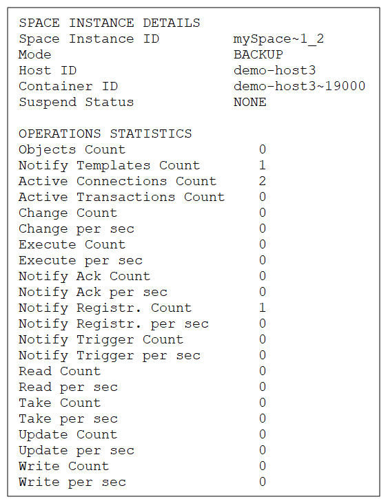

For an explanation of the available Space statistics, see the
Statistics for Space operations
Command:
xap space info --operation-stats <name> or insightedge space info --operation-stats <name>
Description:
This command lists the statistics for Space operations: object count, write/read/take/execute count, etc.
Input Example:
Output Example:

Parameters and Options:
| Item | Name | Description |
|---|---|---|
| Parameter | name | Provide the name of the Space for which you want to display the operation statistics. |
Statistics for Space instance operations
Command:
xap space info-instance --operation-stats <instance ID> or insightedge space info-instance --operation-stats <instance ID>
Description:
This command lists the statistics for Space instance operations: object count, write/read/take/execute count, etc.
Input Example:
Output Example:

Parameters and Options:
| Item | Name | Description |
|---|---|---|
| Parameter | instance ID | Provide the instance ID of the Space instance for which you want to display the operation statistics. |
Statistics for Space operations
Path
GET /spaces/{id}/statistics/operations
Description:
This option lists the statistics for Space operations: object count, write/read/take/execute count, etc.
Example Request:
curl -X GET --header 'Accept: application/json' 'http://localhost:8090/v2/spaces/alertSpace/statistics/operations'
Example Response:
{
"size": 1,
"timestamp": 1521368755460,
"writeCount": 0,
"writePerSecond": 0.00026335180482892404,
"readCount": 0,
"readPerSecond": 0.0005267036096578481,
"takeCount": 0,
"takePerSecond": 0.0005267036096578481,
"updateCount": 0,
"updatePerSecond": 0.00026335180482892404,
"changeCount": 0,
"changePerSecond": 0,
"notifyRegistrationCount": 0,
"notifyRegistrationPerSecond": 0.00026335180482892404,
"notifyTriggerCount": 0,
"notifyTriggerPerSecond": 0.00026335180482892404,
"notifyAckCount": 0,
"notifyAckPerSecond": 0.00026335180482892404,
"executeCount": 0,
"executesPerSecond": 0.00026335180482892404,
"objectCount": 0,
"notifyTemplateCount": 0,
"activeConnectionCount": 0,
"activeTransactionCount": 0
}
}
Options:
| Option | Description | Required |
|---|---|---|
| space name | Provide the name of the Space for which you want to see the operation statistics. | Yes |
Statistics for Space instance operations
Path
GET /spaces/{id}/instances/{instanceId}/statistics/operations
Description:
This option lists the statistics for Space instance operations: object count, write/read/take/execute count, etc.
Example Request:
curl -X GET --header 'Accept: application/json' 'http://localhost:8090/v2/spaces/alertSpace/instances/alertSpace~1/statistics/operations'
Example Response:
{
"adminTimestamp": 1521368888174,
"timestamp": 1521368888174,
"writeCount": 0,
"writePerSecond": 0,
"readCount": 0,
"readPerSecond": 0,
"takeCount": 0,
"takePerSecond": 0,
"updateCount": 0,
"updatePerSecond": 0,
"changeCount": 0,
"changePerSecond": 0,
"notifyRegistrationCount": 0,
"notifyRegistrationPerSecond": 0,
"notifyTriggerCount": 0,
"notifyTriggerPerSecond": 0,
"notifyAckCount": 0,
"notifyAckPerSecond": 0,
"executeCount": 0,
"executesPerSecond": 0,
"objectCount": 0,
"notifyTemplateCount": 0,
"activeConnectionCount": 0,
"activeTransactionCount": 0
}
Options:
| Option | Description | Required |
|---|---|---|
| space name | Provide the name of the Space instance for which you want to see the operation statistics. | Yes |
| instanceId | Provide the instance ID of the Space instance for which you want to see the operation statistics. | Yes |
In the Web Management Console, you can view general operation statistics for a Space. If you have a system with MemoryXtend, you can also view cache and blobstore statistics.
To view operation statistics:
- In the Spaces view, highlight the Space or the Space instance you want to investigate.
- Click Statistics in the upper row of options, and then click Operations to display the operation statistics pane in the lower area of the view.
- The throughput statistics timeline only shows information that is collected in real time. Click Stop to stop it, and Start to start it running again.
- To see the exact value of a specific operation for a specific point in time, hover the mouse over the graph for that time. The information is displayed in a tooltip.
- The Operations Count graph displays a rough estimate of the number of various operations to the Space (or Space instance). To see the exact number of a particular operation, hover the mouse over the relevant graph bar. The exact number of operations is shown in a tooltip.
The operation statistics function doesn’t save past events. If you stop the timeline for a length of time, you will lose the statistics that might have been gathered during that time. When you start the timeline again, it jumps to the current time.
To view MemoryXtend statistics:
- In the Spaces view, double-click the MemoryXtend Space instance for which you want to view statistics. This will drill through to the page that provides access to the Space instance details.
- Click Statistics in the upper row of options, and then click MemoryXtend to display the MemoryXtend statistics for the Space instance.
The following statistics are displayed for off-heap storage:
| Item | Description |
|---|---|
| Used Cache Size | Amount of off-heap cache memory currently being used, in MB. |
| Cache Miss | How many times the data queried was retrieved from the off-heap cache. |
| Cache Hit | How many times the data queried was retrieved from the on-heap storage. |
| Hot Data Cache Miss | How many times the data queried was retrieved from the off-heap cache because the on-heap storage was full. |
| Used Off-Heap Cache | Amount of off-heap memory currently being used, in MB and as a percentage of the total memory allocated for the blobstore. |
The following statistics are displayed for disk storage:
| Item | Description |
|---|---|
| MemTable Hits | Number of MemTable hits. |
| MemTable Misses | Number of MemTable misses (data was not present in the MemTable). |
| Get Queries Served by L0 | Number of Get queries that were served by the L0 layer of the RocksDB. |
| Get Queries Served by L1 | Number of Get queries that were service by the L1 layer of the RocksDB. |
| Get Queries Served by L2 and Up | Number of queries that were served by the L2 layer or deeper of the RocksDB. |
| Keys Written | Number of keys that were written to the RocksDB. |
| Keys Read | Number of keys that were read from the RocksDB. |
| Keys Updated | (If in-place update is enabled) Number of keys that were updated in the RocksDB. |
| Bytes Sent | Number of uncompressed bytes issued by the following RocksDB operations: Put, Delete, Merge, Write. |
| Bytes Received via Get | Number of uncompressed bytes read from the RocksDB Get operation. |
| Bytes Received via Iterator | Number of uncompressed bytes read from an iterator (initial load). |
| MultiGet Calls | Number of MultiGet calls. |
| Keys Read via MultiGet | Number of keys read via MultiGet calls. |
| Bytes Received via MultiGet | Number of bytes received via MultiGet calls. |
Refer to the GigaSpaces Management Center topics in the Administration section.
Refer to the Admin API topics in the Developer Guide.